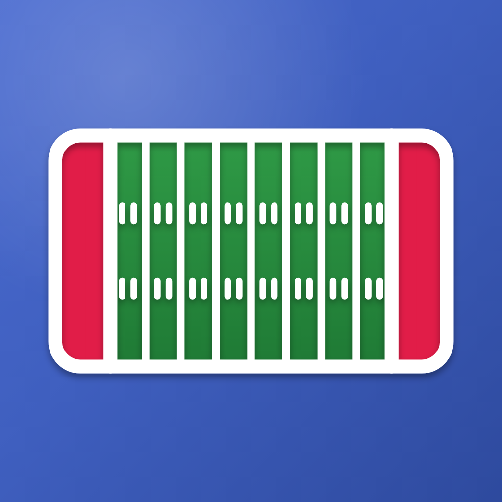

SnapCountSupport
Questions, problems, or a stat the app should keep and does not: email hello@carislabs.app.
Common questions
Do I need an account?
No. Tap "Not now" and SnapCount works entirely on your phone. Signing in with Apple keeps the season backed up and lets a second phone pick it up.
How do I get my roster in?
Settings → Team & Roster. Type the players, paste a list, pick a file, or choose a photo or screenshot of your league app's roster. The text is read on your phone and nothing is uploaded.
Where are my stats?
Box Score during a game, Season for every filed game and season totals. Settings → Your data exports a CSV for a spreadsheet.
How do I delete my account?
Settings → Account & backup → Delete my account. That removes your account and the backup on our server. The book on your phone stays, and you can delete the app to remove it.